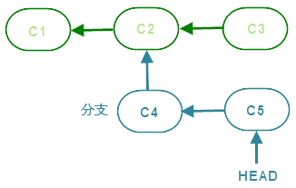
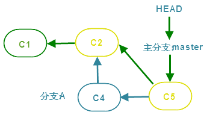
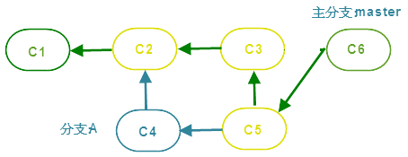

[Git使用手册]-5-Git分支管理
引言
本文将介绍git中一个很重要的特性——分支；如今，几乎所有的版本控制系统都支持"分支"这种特性，但git的实现方式与其他的版本控制系统有明显的区别，它不会拷贝整个项目的副本作为"分支"的基础，而是使用类似"快照"的功能，这样做的好处是，节约了创建"分支"的时间成本；所以在git中，可以随时创建大量"分支"来应对不同方向的研发需求。
文章目录
0×1.分支模型图
当使用"git commit"提交修改时，Git计算每一个子目录的校验和，然后在Git仓库中将这些目录保存为树(tree)对象。之后Git创建一个新的历史版本，除了包含相关提交信息以外，还包含着指向这个树对象(项目根目录)的指针，如此它就可以在将来需要的时候，重现此次快照的内容。这在上一篇文章历史版本模型图中已经介绍过。
创建分支：
创建一个新的分支，实际上就是创建当前最新历史版本的一个快照，在此分支上的修改和提交不会影响到主分支，直到将这个分支合并到主分支为止，如下图所示：
假设一个仓库目录进行了两次提交，创建了"C1"，"C2"两个历史版本，现在突然接到任务要开发一个新的功能，但不确定这个功能是否能够实现，为了不影响主分支的开发，在"C2"的基础上新建了一个分支，并提交了一个新的版本"C4"作为这个新功能的实现版本，在"C4"的基础上又进行修改并提交创建了"C5"，此时，分支"C5"和主分支"C2"互相之间没有影响，他们是两个平行的项目分支，我们可以在这两个分支之间切换，比如切换回"C2"分支，然后提交创建"C3"，现在，主分支照样开发，而新分支如果实现不了，可以直接删除，并不会影响主分支，如果分支开发完成并可以投入使用，那么再将分支合并到主分支即可。
在上图中，"HEAD"对象指向了新分支最后一次提交的版本，实际上"HEAD"对象永远指向正在使用的分支的最新历史版本，如果我们切换回主分支，那么"HEAD"对象将指向"C3"。
合并分支：
合并分支有两种方式："Fast forward"与"3-way"；
"Fast forward"合并如下图所示，在主分支"master"的"C2"新建了一个分支"A"，在分支"A"中进行了两次修改提交，分别创建了"C4"和"C5"，如果此时主分支没有变动，将分支"A"合并到"master"分支时，只需要将"HEAD"指向"C5"即可，在主分支的历史版本链中，"C2"后面直接变成了"C5"：
"3-way"的合并方式就显得复杂的多，如下图所示，在主分支的"C2"处创建了一个新的分支，之后新分支和主分支都做出了修改，新分支更新版本到"C5"，主分支更新版本到"C3"，此时如果想将新分支合并到主分支，需要执行三步操作：首先用"C5"与"C2"比较，得到一张修改列表；再用"C3"与"C2"比较，同样得到一张修改列表；最后，将这两张修改列表进行比较，根据比较结果创建一个新的历史版本"C6"来包含两个分支所有的变化，在主分支历史版本链中将会增加两个历史版本"C5"与"C6"，"C5"将指向"C3"，"C6"指向"C5"完成合并：
0×2.分支管理实例
a.创建分支
#新建一个目录并将它初始化成git仓库目录 www@qingsword.com:~$ mkdir BranchDemo www@qingsword.com:~$ cd BranchDemo/ www@qingsword.com:~/BranchDemo$ git init 初始化空的 Git 版本库于 /home/qing/BranchDemo/.git/ #在这个仓库中创建两个文件，写入数据并提交 www@qingsword.com:~/BranchDemo$ touch file1 www@qingsword.com:~/BranchDemo$ echo aaa >> file1 www@qingsword.com:~/BranchDemo$ touch file2 www@qingsword.com:~/BranchDemo$ echo bbb >> file2 www@qingsword.com:~/BranchDemo$ git add file1 file2 www@qingsword.com:~/BranchDemo$ git commit -m 'first commit' #修改其中一个文件的内容，第二次提交 www@qingsword.com:~/BranchDemo$ echo ccc >> file1 www@qingsword.com:~/BranchDemo$ git commit -am 'second commit' #现在，主分支"master"下有两个历史版本 www@qingsword.com:~/BranchDemo$ git log --oneline c9fb17d second commit aca49e1 first commit #以最新的历史版本为基础创建一个分支"branch_A" www@qingsword.com:~/BranchDemo$ git branch branch_A #查看分支列表，分支名称前带"*"号，表示当前所在分支 www@qingsword.com:~/BranchDemo$ git branch branch_A * master #切换到分支"branch_A"，切换分支命令与文件版本回滚命令最大的区别是，文件版本回滚命令在checkout后面有两个"-"符号 www@qingsword.com:~/BranchDemo$ git checkout branch_A 切换到分支 'branch_A' www@qingsword.com:~/BranchDemo$ git branch * branch_A master #切换回"master"分支 www@qingsword.com:~/BranchDemo$ git checkout master 切换到分支 'master' #使用"-b"参数，将"创建分支"和"切换分支"合并成一条指令，即创建后自动切换到该分支下 www@qingsword.com:~/BranchDemo$ git checkout -b branch_B 切换到一个新分支 'branch_B' www@qingsword.com:~/BranchDemo$ git branch branch_A * branch_B master
b.合并分支
首先使用"branch_B"这个分支来演示一次"Fast forward"合并：
#接着上面的实验，当前处于"branch_B"分支下，给"file2"添加几个字符，并且提交这次修改 www@qingsword.com:~/BranchDemo$ echo ddd >> file2 www@qingsword.com:~/BranchDemo$ git add file2 www@qingsword.com:~/BranchDemo$ git commit -m 'branch_B first commit' [branch_B bec5d00] branch_B first commit #在"branch_B"分支下查看历史版本列表 www@qingsword.com:~/BranchDemo$ git log --oneline bec5d00 branch_B first commit c9fb17d second commit aca49e1 first commit #切换回"master"分支 www@qingsword.com:~/BranchDemo$ git checkout master 切换到分支 'master' #查看"master"分支历史版本，并没有"bec5d00 branch_B first commit"这条记录，根据第1小节的说明也不难理解，在没有合并前，主分支和其他分支是并行存在的 www@qingsword.com:~/BranchDemo$ git log --oneline c9fb17d second commit aca49e1 first commit #将"branch_B"分支与主分支合并，因为主分支并没有做出修改，所以git选择"Fast-forward"方式合并，注意输出中显示"更新 c9fb17d..bec5d00"，也就是直接将"branch_B"中的最新历史版本保存为主分支的最新历史版本 www@qingsword.com:~/BranchDemo$ git merge branch_B 更新 c9fb17d..bec5d00 Fast-forward file2 | 1 + 1 file changed, 1 insertion(+) #再次查看主分支的历史版本列表，多出来一个历史记录 www@qingsword.com:~/BranchDemo$ git log --oneline bec5d00 branch_B first commit c9fb17d second commit aca49e1 first commit #合并分支后本不代表"branch_B"分支就不存在了，它还是存在的，直到我们手动删除为止，在实际环境中，也应该删除这些被合并了的分支，分支删除操作稍后会介绍 www@qingsword.com:~/BranchDemo$ git branch branch_A branch_B * master
下面使用"branch_A"分支来演示"3-way"这种合并方式，经过上面的操作，现在主分支已经发生了变化，多出一个历史版本，而"branch_A"分支还是基于"c9fb17d second commit"这个历史版本：
#切换到"branch_A"分支，修改"file1"并提交一个新的版本 www@qingsword.com:~/BranchDemo$ git checkout branch_A 切换到分支 'branch_A' www@qingsword.com:~/BranchDemo$ echo eee >> file1 www@qingsword.com:~/BranchDemo$ git add file1 www@qingsword.com:~/BranchDemo$ git commit -m 'branch_A first commit' [branch_A cfe93e4] branch_A first commit #"branch_A"分支的历史版本链 www@qingsword.com:~/BranchDemo$ git log --oneline cfe93e4 branch_A first commit c9fb17d second commit aca49e1 first commit #切换回"master"分支 www@qingsword.com:~/BranchDemo$ git checkout master 切换到分支 'master' #将"branch_A"分支合并到主分支中 www@qingsword.com:~/BranchDemo$ git merge branch_A #这一次使用的是"3-way"合并方式，最明显的特点是，会弹出一个vim界面，让你输入一段描述文本，作为合并后新创建的历史版本的说明 Merge made by the 'recursive' strategy. file1 | 1 + 1 file changed, 1 insertion(+) #查看合并后主分支的历史版本链，根据第一小节的分析不难理解，为什么多出两个历史版本 www@qingsword.com:~/BranchDemo$ git log --oneline db6deb3 Merge branch 'branch_A' cfe93e4 branch_A first commit bec5d00 branch_B first commit c9fb17d second commit aca49e1 first commit
c.合并有冲突的分支
在上面的例子中，都只是给文件追加文本，所以文本之间并不会出现冲突的情况，接着上面的实验：
#新建并切换到"branch_C"分支 www@qingsword.com:~/BranchDemo$ git checkout -b branch_C 切换到一个新分支 'branch_C' #在这个分支下，修改"file2"追加一行"xxx"，并提交这次改动 www@qingsword.com:~/BranchDemo$ echo xxx >> file2 www@qingsword.com:~/BranchDemo$ git add file2 www@qingsword.com:~/BranchDemo$ git commit -m 'branch_C first commit' [branch_C 664a102] branch_C first commit #此时"branch_C"分支的历史版本链如下 www@qingsword.com:~/BranchDemo$ git log --oneline 664a102 branch_C first commit db6deb3 Merge branch 'branch_A' cfe93e4 branch_A first commit bec5d00 branch_B first commit c9fb17d second commit aca49e1 first commit #切换回"master"分支 www@qingsword.com:~/BranchDemo$ git checkout master #对同一个文件的同一行做出不同的修改，在"master"分支中，修改"file2"追加一行"ooo"，并提交 www@qingsword.com:~/BranchDemo$ echo ooo >> file2 www@qingsword.com:~/BranchDemo$ git commit -am 'master update file2' [master 243ad07] master update file2 #此时"master"分支的历史版本链如下 www@qingsword.com:~/BranchDemo$ git log --oneline 243ad07 master update file2 db6deb3 Merge branch 'branch_A' cfe93e4 branch_A first commit bec5d00 branch_B first commit c9fb17d second commit aca49e1 first commit #将"branch_C"分支合并到"master"时报错，提示"file2"存在冲突，一般这种代码冲突都需要手动合并并且再次提交 www@qingsword.com:~/BranchDemo$ git merge branch_C 自动合并 file2 冲突（内容）：合并冲突于 file2 自动合并失败，修正冲突然后提交修正的结果。 #查看file2的内容，可以看到"======="隔开的上半部分，是HEAD（即"master"分支，在运行merge命令时检出的分支）中的内容，下半部分是在"branch_C"分支中的内容 www@qingsword.com:~/BranchDemo$ more file2 bbb ddd <<<<<<< HEAD ooo ======= xxx >>>>>>> branch_C #需要使用编辑器手动修改这几行的内容 www@qingsword.com:~/BranchDemo$ vim file2 #例如改成下面的样子，需要手动将"冲突说明"信息删除（就是文件中"<<<<<<<HEAD"这些信息） www@qingsword.com:~/BranchDemo$ more file2 bbb ddd ooo xxx #手动修改完这些冲突后，提交这些修改，就完成了与"branch_C"分支的合并，有些朋友可能会觉得很奇怪，合并的时候不是报错了吗，为什么这里说完成了合并？实际上，两个分之间没有冲突的地方已经被自动合并了，只有产生冲突的地方没有完全合并，而现在手动修改了这些冲突后再次提交，也是就完成了全部的合并 www@qingsword.com:~/BranchDemo$ git commit -am 'merge branch_C'
d.删除分支
上面我们创建了三个分支，现在演示如何删除它们：
#当前在"master"分支中 www@qingsword.com:~/BranchDemo$ git branch branch_A branch_B branch_C * master #分别删除前面的三个分支，只需要使用"-d"参数 www@qingsword.com:~/BranchDemo$ git branch -d branch_A 已删除分支 branch_A（曾为 cfe93e4）。 www@qingsword.com:~/BranchDemo$ git branch -d branch_B 已删除分支 branch_B（曾为 bec5d00）。 www@qingsword.com:~/BranchDemo$ git branch -d branch_C 已删除分支 branch_C（曾为 664a102）。 #只有当分支被正常合并到主分支"master"中后，才能使用这种删除方式，新建一个分支"branch_D"，并在其中完成一次文件修改提交，在合并之前尝试删除它 www@qingsword.com:~/BranchDemo$ git checkout -b branch_D 切换到一个新分支 'branch_D' www@qingsword.com:~/BranchDemo$ echo qqq >> file2 www@qingsword.com:~/BranchDemo$ git commit -am 'branch_D first commit' #切换回"master"分支，尝试删除"branch_D"，结果报错了，提示"branch_D"分支并没有被合并 www@qingsword.com:~/BranchDemo$ git checkout master 切换到分支 'master' www@qingsword.com:~/BranchDemo$ git branch -d branch_D error: 分支 'branch_D' 没有完全合并。 如果您确认要删除它，执行 'git branch -D branch_D'。 #如果想删除还没有被合并的分支，请使用大写的D参数，这将强制删除这个分支，如下 www@qingsword.com:~/BranchDemo$ git branch -D branch_D 已删除分支 branch_D（曾为 4c07a04）。